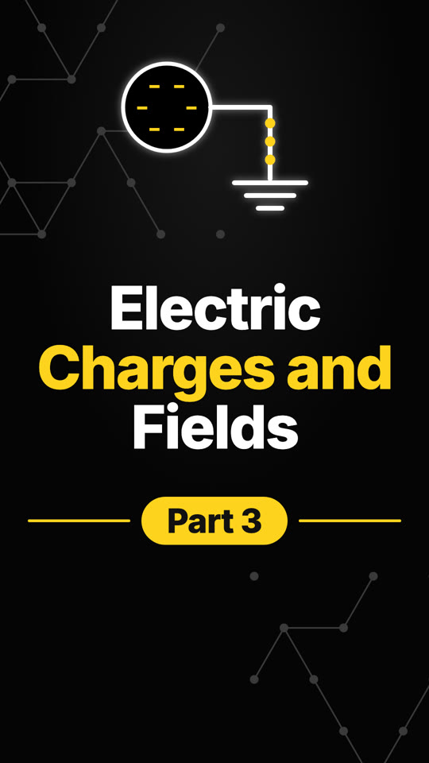
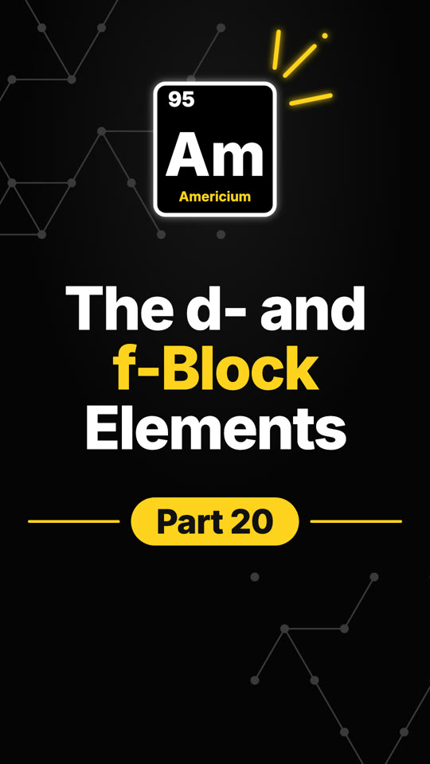

Choose your class
Every subject is laid out chapter by chapter. Each topic has a short Doodle video, notes you can download and a quick quiz.
Class 9Motion, matter, the cell and number systems: the foundations of school science and maths.ScienceMathematics21 videosClass 10Light, electricity, chemical reactions, life processes and the algebra and geometry of board year.ScienceMathematics9 videosClass 11Mechanics, thermodynamics, atomic structure, bonding, functions and the living world.PhysicsChemistryMathematicsBiology16 videosClass 12Electromagnetism, optics, modern physics, solutions and kinetics, calculus and genetics.PhysicsChemistryMathematicsBiology54 videosExtra / SupplementaryCurious questions beyond the syllabus: why the sky is blue, why we yawn, why 0.999… equals 1, and more.ScienceBiologyMathematics11 videos
Newest videos
 Where Does Electric Charge Go? Additivity and Conservation of ChargeRub a glass rod with silk and the two get charges that are always exactly equal and opposite. Rubbing moves electrons from the glass to the silk; it never makes charge. Charge is additive (the total is the algebraic sum, signs included) and conserved (the total charge of an isolated system never changes). The rule holds even when particles transform: a free neutron becomes a proton, an electron and an antineutrino, and a gamma photon near a nucleus becomes an electron and a positron, with the total charge unchanged every time.Electric Charges and Fields · Physics · 9:16 + 16:9
Where Does Electric Charge Go? Additivity and Conservation of ChargeRub a glass rod with silk and the two get charges that are always exactly equal and opposite. Rubbing moves electrons from the glass to the silk; it never makes charge. Charge is additive (the total is the algebraic sum, signs included) and conserved (the total charge of an isolated system never changes). The rule holds even when particles transform: a free neutron becomes a proton, an electron and an antineutrino, and a gamma photon near a nucleus becomes an electron and a positron, with the total charge unchanged every time.Electric Charges and Fields · Physics · 9:16 + 16:9
Why a Comb Stays Charged but a Spoon Doesn't: Conductors, Insulators and EarthingRub a plastic comb on dry hair and it lifts paper bits; rub a steel spoon and nothing happens. Rubbing moves electrons, and what happens next depends on the material. Conductors (metals, the human body, the earth) have free electrons, so charge spreads over them and leaks away through the hand and body into the earth. Insulators (plastic, glass, nylon, wood) hold their electrons bound, so charge stays where it was put. Earthing connects a body to the earth, a giant charge reservoir; at home the earth wire and fuse use it for safety, and fuel tankers are earthed to prevent static sparks.Electric Charges and Fields · Physics Twins, Round by Round: Lanthanoids vs ActinoidsThe two f-block rows below the periodic table (in line, it would be 32 columns wide) look like twins: both fill f orbitals, prefer +3 and contract across the row. But actinoid 5f lies close to 6d and 7s and extends further out, so actinoids reach +3 to +7 (lanthanoids never above +4), contract more, are more reactive, form more complexes and oxo ions such as UO₂²⁺, have more complex magnetism and lower early ionisation enthalpies. Every actinoid is radioactive; among the lanthanoids only promethium is.The d- and f-Block Elements · Chemistry
Twins, Round by Round: Lanthanoids vs ActinoidsThe two f-block rows below the periodic table (in line, it would be 32 columns wide) look like twins: both fill f orbitals, prefer +3 and contract across the row. But actinoid 5f lies close to 6d and 7s and extends further out, so actinoids reach +3 to +7 (lanthanoids never above +4), contract more, are more reactive, form more complexes and oxo ions such as UO₂²⁺, have more complex magnetism and lower early ionisation enthalpies. Every actinoid is radioactive; among the lanthanoids only promethium is.The d- and f-Block Elements · Chemistry
The Element on Your Ceiling: The ActinoidsAn ionisation smoke detector holds about 1 microcurie of americium-241, a man-made actinoid. The actinoids are the fourteen elements thorium (90) to lawrencium (103), filling 5f: [Rn] 5f¹⁻¹⁴ 6d⁰⁻¹ 7s². Because 5f, 6d and 7s are close in energy they show a wide range of oxidation states: +3 is common, but Th reaches +4, Pa +5, U +6 (as in uranyl UO₂²⁺) and Np and Pu +7, after which the maximum falls. 5f electrons shield poorly, so the actinoid contraction is larger than the lanthanoid contraction. The metals are very reactive (boiling water gives oxide and hydride; HCl attacks them; nitric acid forms a protective oxide layer; alkalies have no action). All actinoids are radioactive: Th-232 (≈ 14 billion years) and U-238 (≈ 4.5 billion years) occur in nature, while the elements beyond uranium are man-made and the last ones survive only minutes to hours.The d- and f-Block Elements · Chemistry The Spark Is Burning Metal: Lanthanoids in Everyday TechnologyA lighter "flint" is not stone but mischmetall, about 95% lanthanoid metals (mostly cerium) and 5% iron; scraped shavings catch fire in air, so the spark is burning metal. Lanthanoids are silvery-white, soft metals that tarnish rapidly in air; hardness increases with atomic number (samarium is steel-hard); they conduct heat and electricity. They are very reactive (early members like calcium, later ones like aluminium; E° about −2.2 to −2.4 V): they burn in O₂ (Ln₂O₃; Ce gives CeO₂) and halogens (LnX₃), react with water (Ln(OH)₃ + H₂) and dilute acids (H₂), and on heating form LnN, Ln₂S₃, LnC₂ (2773 K) and hydrides. Their oxides and hydroxides are basic. Most Ln³⁺ ions are coloured because of f electrons; La³⁺ (4f⁰) and Lu³⁺ (4f¹⁴) are colourless. Uses: alloy steels (best single use), mischmetall in Mg alloys for bullets, shells and lighter flint, mixed oxides as petroleum-cracking catalysts, oxides as TV phosphors, and Nd₂Fe₁₄B magnets in phones. Rare earths are not rare: cerium is as common as copper.The d- and f-Block Elements · Chemistry
The Spark Is Burning Metal: Lanthanoids in Everyday TechnologyA lighter "flint" is not stone but mischmetall, about 95% lanthanoid metals (mostly cerium) and 5% iron; scraped shavings catch fire in air, so the spark is burning metal. Lanthanoids are silvery-white, soft metals that tarnish rapidly in air; hardness increases with atomic number (samarium is steel-hard); they conduct heat and electricity. They are very reactive (early members like calcium, later ones like aluminium; E° about −2.2 to −2.4 V): they burn in O₂ (Ln₂O₃; Ce gives CeO₂) and halogens (LnX₃), react with water (Ln(OH)₃ + H₂) and dilute acids (H₂), and on heating form LnN, Ln₂S₃, LnC₂ (2773 K) and hydrides. Their oxides and hydroxides are basic. Most Ln³⁺ ions are coloured because of f electrons; La³⁺ (4f⁰) and Lu³⁺ (4f¹⁴) are colourless. Uses: alloy steels (best single use), mischmetall in Mg alloys for bullets, shells and lighter flint, mixed oxides as petroleum-cracking catalysts, oxides as TV phosphors, and Nd₂Fe₁₄B magnets in phones. Rare earths are not rare: cerium is as common as copper.The d- and f-Block Elements · Chemistry The Element That Hid for 134 Years: Lanthanoid ContractionHafnium sat in zircon beside zirconium but was found only in 1923, 134 years after zirconium, because the two are almost the same size (Zr 160 pm, Hf 159 pm) despite Hf's 32 extra electrons and extra shell. Between them in period 6 sit the 14 lanthanoids, across which the size of atoms and Ln³⁺ ions decreases steadily (La³⁺ ≈ 103 pm → Lu³⁺ ≈ 86 pm): the lanthanoid contraction. Each step adds a proton while the new electron enters 4f, which shields poorly (s > p > d > f), so the outer electrons are pulled in. The contraction cancels the expected increase in period 6: Zr ≈ Hf, Nb ≈ Ta, Mo ≈ W; Zr and Hf (and the lanthanoids) are hard to separate; and the basicity of Ln(OH)₃ decreases from La to Lu.The d- and f-Block Elements · Chemistry
The Element That Hid for 134 Years: Lanthanoid ContractionHafnium sat in zircon beside zirconium but was found only in 1923, 134 years after zirconium, because the two are almost the same size (Zr 160 pm, Hf 159 pm) despite Hf's 32 extra electrons and extra shell. Between them in period 6 sit the 14 lanthanoids, across which the size of atoms and Ln³⁺ ions decreases steadily (La³⁺ ≈ 103 pm → Lu³⁺ ≈ 86 pm): the lanthanoid contraction. Each step adds a proton while the new electron enters 4f, which shields poorly (s > p > d > f), so the outer electrons are pulled in. The contraction cancels the expected increase in period 6: Zr ≈ Hf, Nb ≈ Ta, Mo ≈ W; Zr and Hf (and the lanthanoids) are hard to separate; and the basicity of Ln(OH)₃ decreases from La to Lu.The d- and f-Block Elements · Chemistry